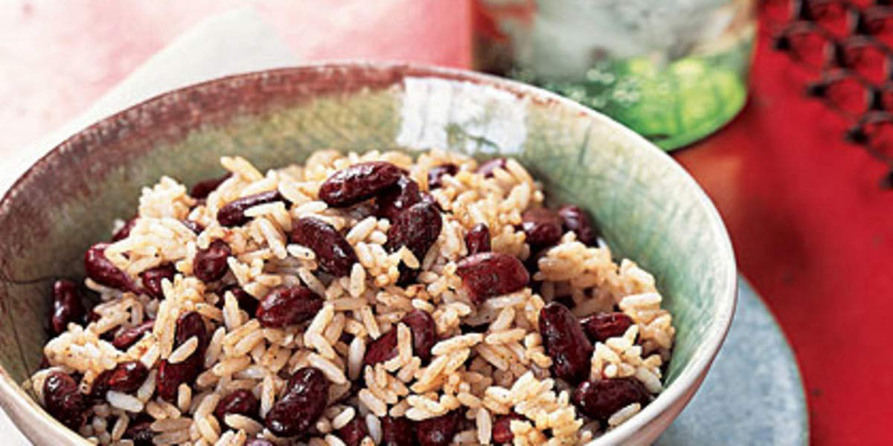

Rice & Peas
Recipe Specification
Ingredients List
| Ingredients | Quantity |
|---|---|
| Basmati Rice | 200g |
| Coconut Milk | 1x400g |
| Spring Onions | 2 Stalks |
| Thyme | 2 sprigs |
| Garlic Cloves | 2 Cloves |
| All Spice | 1 tsp |
| Kidney Beans | 2x400g |
| Salt & Pepper | To Taste |
Yield: 4-6 portions
Preparation
- Drain kidney beans in colander.
- Wash basmati rice 3-4 times in running cold water.
- Finely slice spring onion.
- Peel and crush garlic cloves.
Cooking Instructions
- Place medium sized pan over a medium/high heat. Add rice, coconut milk, spring onions thyme, garlic and all spice to the pan. Pour in 300ml of cold water and add 1 tsp of salt before stirring, bringing to the boils and reducing to the simmer. Cover pan with lid and cook for 10 minutes.
- Remove pan from the heat and mix in kidney beans. Leave pan to stand with lid on, for a further 5 minutes before serving.

Serving Suggestions
Rice & peas are normally best served with jerk chicken and corn on the cobb.
Storing instructions
Cool to room temperature before placing in an air-tight container and in the fridge. Consume rice within 4 days of making.
Reheating Instructions
Place in the microwave for 2-3 minutes.